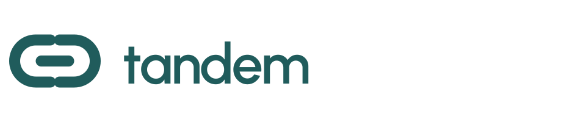
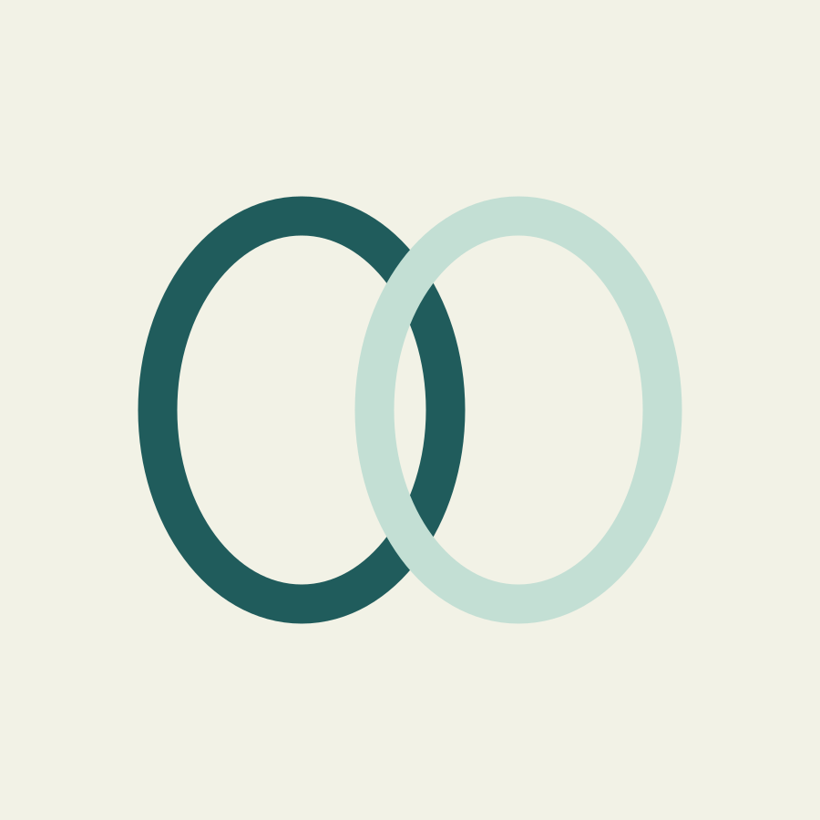
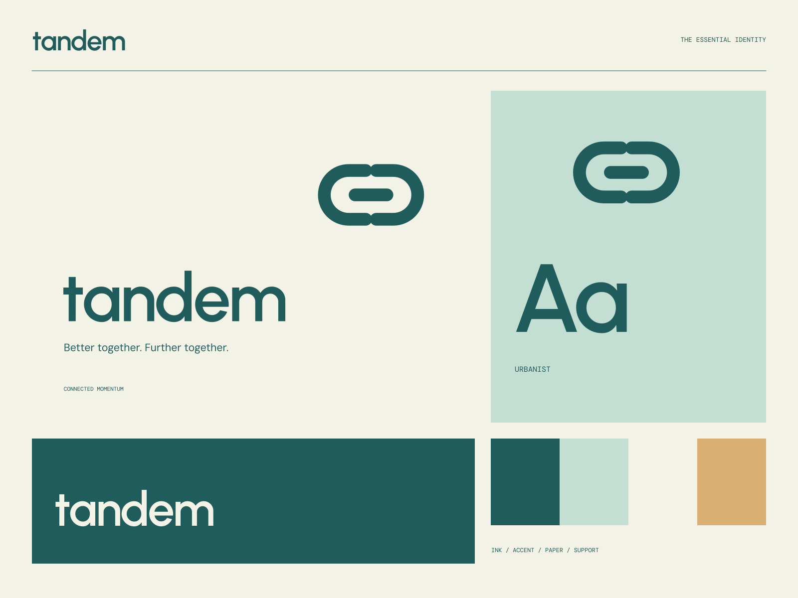

01
Share the direction
A useful way to connect people going somewhere similar.

SHARED JOURNEYS / BETTER EVERYDAYS
Better together. Further together. Connection makes more possible.

A coherent little world
Connection makes more possible. Better together. Further together.
01
A useful way to connect people going somewhere similar.
02
Thoughtful route information and simple journey planning.
03
A cooperative approach to moving through the everyday.

The point of view
Braided loops, wheel-like negative spaces, clean route diagrams, and friendly functional typography. Connection is expressed through continuous geometry and shared direction.